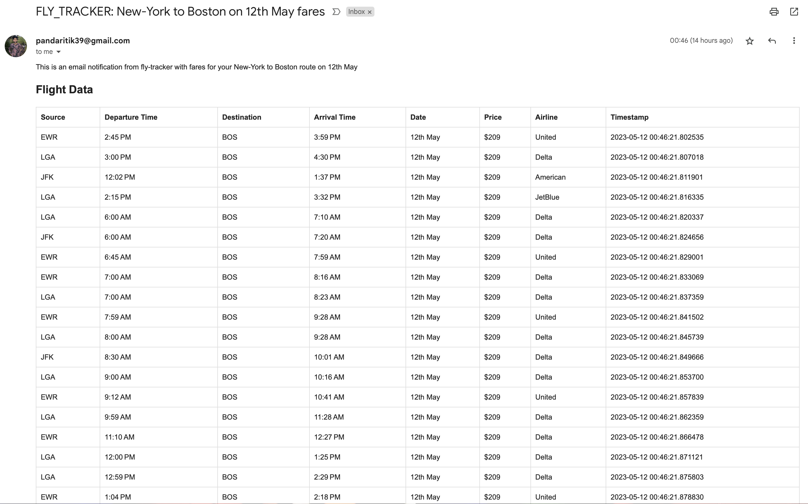
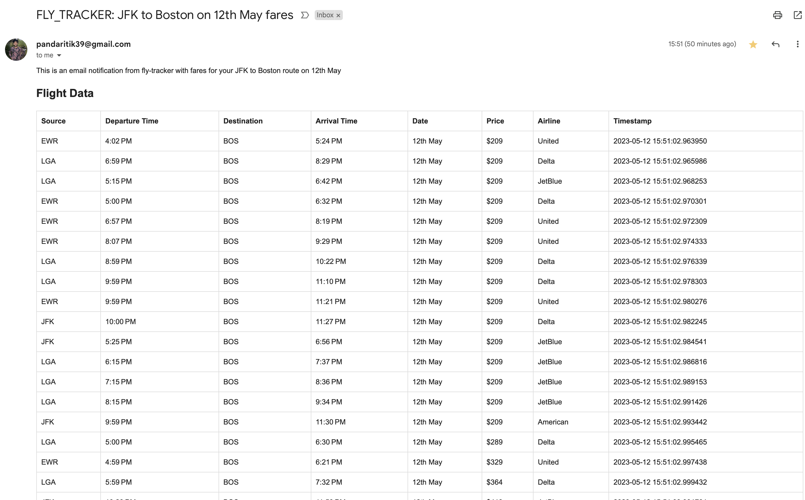
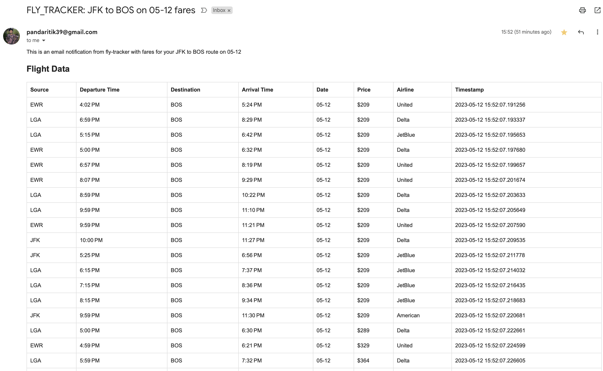

Fly Tracker Command Line Interface (CLI) Example Usage Guide¶
Fly Tracker is a command line interface (CLI) tool that allows you to track flight prices and receive notifications when prices for specific routes fall below a specified amount. This document serves as a guide for how to use the fly_tracker module effectively.
Table of Contents¶
1. Installation¶
Before using Fly Tracker, you need to install it. This can be done by running the following command in your terminal:
pip install fly-tracker
2. Command Line Arguments¶
The fly_tracker module takes several command line arguments:
–src (required): The source location (city or airport) from where you are planning to fly. –dest (required): The destination location (city or airport) to where you are planning to fly. –price (required): The maximum price you are willing to pay for the flight. –date (required): The date of the flight. –email (required): The email address where you want to receive notifications. The general format of the command is as follows:
python3 -m fly_tracker --src <source> --dest <destination> --price <max_price> --date <flight_date> --email <your_email>
3. Examples¶
If you want to track flights from New York to Boston on May 12th and get notified twice a day for all the fars below $100, you could do it in a couple of ways.Please note: In the above examples, be sure to replace "example@example.com" with your own email address where you wish to receive flight fare notifications.
Here are a couple of examples to illustrate how to use the Fly Tracker module:
Example 1: Tracking Flights from New York to Boston - Passing the city names as input and date in words¶
python3 -m fly_tracker --src "New York" --dest "Boston" --price 100 --date "12th May" --email "example@example.com"
This is how your notification will look like:

Example 2: Tracking Flights from New York to Boston - Passing the aiport names as input¶
python3 -m fly_tracker --src "JFK" --dest "Boston" --price 100 --date "12th May" --email "example@example.com"
This is how your notification will look like:

Example 3: Tracking Flights from New York to Boston - Passing the date in mm-dd format¶
python3 -m fly_tracker --src "New York" --dest "BOS" --price 100 --date "05-12" --email "example@example.com"
This is how your notification will look like:
